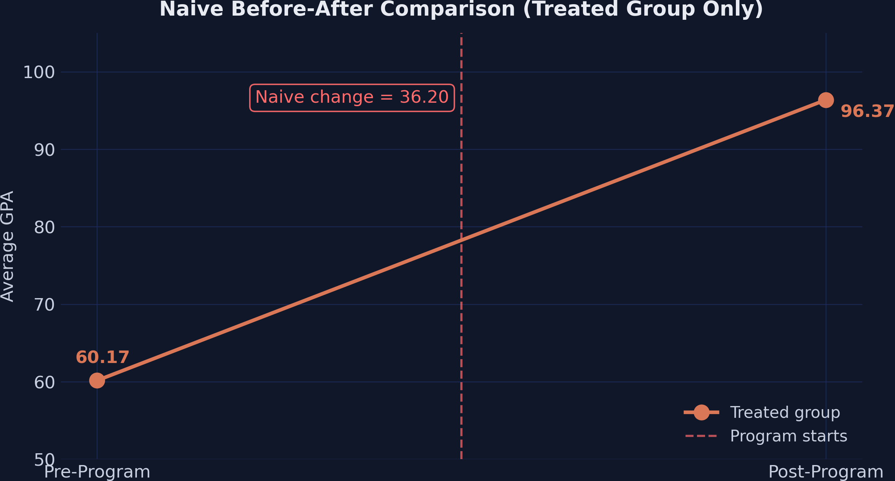
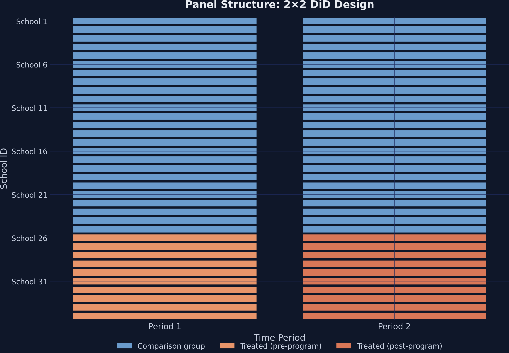
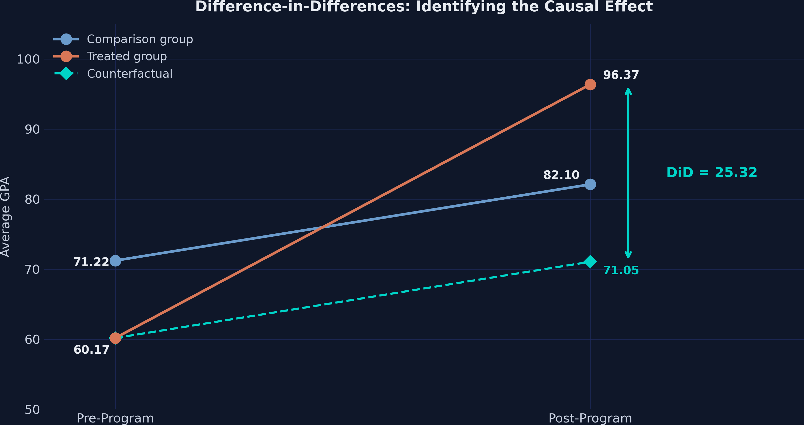
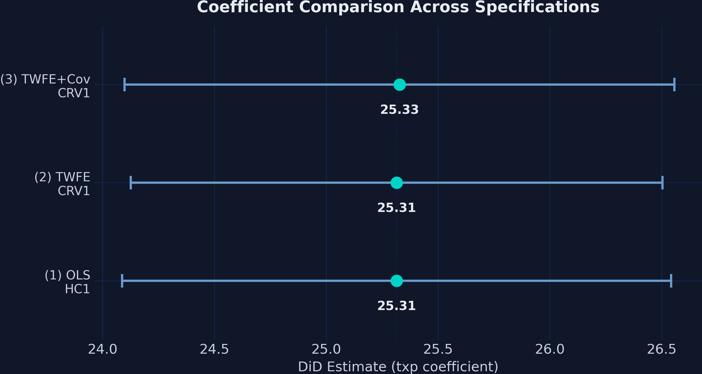
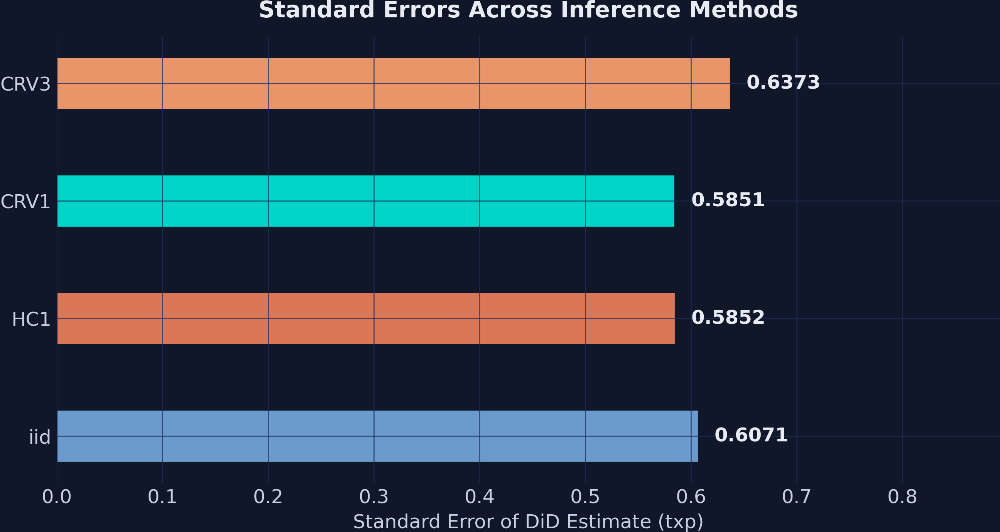
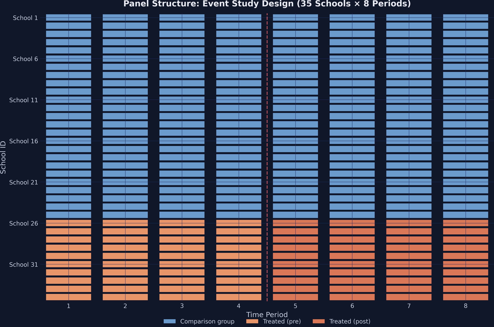
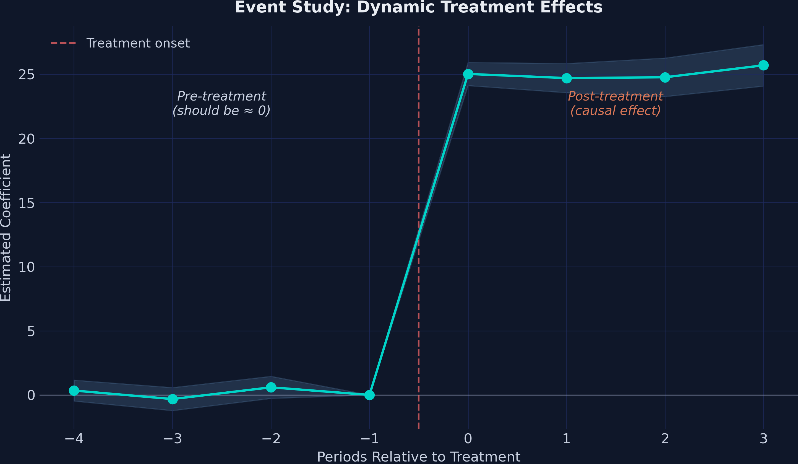

Tutored schools’ GPA jumped 36 points — case closed?
A district launched after-school tutoring in 10 of its 35 high schools. One year later, average GPA in those schools rose from 60.17 to 96.37.
A 36.20-point leap. But the 25 untreated schools also improved — from 71.22 to 82.10. How much of the jump is really the program?
The naive before-after credits the entire 36-point rise to the program

Treated-group GPA rising from 60.17 to 96.37: the naive estimator credits the full 36.20-point increase to tutoring, ignoring everything else that changed.
The plan: from a naive before-after to an 8-period event study
The lab: 35 schools in 2 periods, a clean 2×2 design
Why the naive estimate overstates, and how a comparison group fixes it
Manual double-differencing, then OLS and two-way fixed effects in PyFixest
Four standard errors: does inference change the verdict?
An 8-period event study, then five tempting misreadings
The Investigation
Act II
A clean 2×2 lab: 35 schools, 2 periods, simultaneous adoption

Panel structure: 10 treated schools (orange) switch on after the intervention; 25 comparison schools (steel blue) never do. Timing is simultaneous and treatment, once on, stays on.
Before you look: what happened in the schools without tutoring?
Tutored schools rose 36.20 points. What did the 25 comparison schools do, and where does that leave DiD?
A. They stayed flat, so DiD is about 36
B. They rose by about 11 points, so DiD is about 25
C. They fell, so DiD is larger than 36
The comparison group reveals an 11-point trend the program never caused
Group
Pre
Post
Change
Comparison (25)
71.22
82.10
+10.88
Treated (10)
60.17
96.37
+36.20
The comparison group’s +10.88 is the secular trend: the rise that would have happened anyway.
DiD is a double difference: 36.20 minus 10.88 equals 25.32
Subtract the trend the comparison group reveals; what is left is the program’s effect.
The counterfactual: where treated schools would have landed without tutoring

Three lines: comparison (steel, 71.22→82.10), treated (orange, 60.17→96.37) and the counterfactual (teal dashed, 60.17→71.05). The 25.32 gap between the actual and counterfactual treated outcome is the ATT.
DiD identifies the ATT, not the ATE, under parallel trends
Coefficient unchanged at 25.315; the SE moves from 0.615 (HC1) to 0.585 (clustered by school).
Before you look: does female_share move the estimate?
The share of female students varies a little within schools. Add it to the model: what happens to 25.315?
A. It falls by more than one GPA point
B. It rises by more than one GPA point
C. It barely moves: less than 0.1 points
Three specifications, one answer: 25.315 to 25.328

The txp estimate across OLS/HC1, TWFE/CRV1 and TWFE + covariate/CRV1: all clustered tightly around 25.32, with narrow intervals far from zero.
Stability is the reassuring part; an insignificant covariate does not prove the fixed effects capture everything.
Before you look: which standard error is largest?
Same model, same coefficient (25.315), four variance estimators: iid, HC1, CRV1 (clustered by school) and CRV3 (a leave-one-school-out jackknife). Which reports the largest standard error?
A. iid
B. HC1
C. CRV3
Inference choices barely move the needle when the signal is this strong

Standard errors across iid, HC1, CRV1 and CRV3. CRV3 is largest (0.637); HC1 and CRV1 are nearly identical (0.585). All four give overwhelmingly significant results.
Here the design, not the variance estimator, decides the verdict: every t-statistic is above 39.
The Resolution
Act III
The program raises GPA by 25.32 points, not 36.20
25.32
ATT, stable across specifications (25.315–25.328) · the naive 36.20 overstated it by 43%
The event-study panel: treatment switches on in period 5

Panel structure for the event study: 35 schools across 8 periods. Treatment begins in period 5; the 10 treated schools switch from light to dark orange, and the 25 comparison schools stay steel blue.
Before you look: what should the event study show?
Eight periods, one coefficient per period, each relative to t = −1. If parallel trends holds, what do we see?
A. Leads near zero; lags jump to about 25 and stay roughly flat
B. Leads near zero; lags climb steadily from about 10 to about 40
C. Leads already around 25
Leads near zero and an effect from the first treated period: a textbook event study

Event-study coefficients by period relative to treatment. Leads (t = −4 to −2) sit near zero with intervals covering zero; lags (t = 0 to 3) jump to about 25 and stay flat.
The numbers behind the picture: quiet leads, loud lags
Period
Estimate
95% CI
Significant?
t = −4
0.34
[−0.47, 1.16]
no
t = −3
−0.32
[−1.22, 0.57]
no
t = −2
0.59
[−0.27, 1.45]
no
t = 0
25.03
[24.12, 25.93]
yes
t = 3
25.70
[24.08, 27.32]
yes
Three near-zero leads are consistent with parallel trends; four large lags trace a stable effect.
Five tempting misreadings
Common misconceptions
“Insignificant leads prove parallel trends”: they are evidence, not proof
Myth. The leads (0.34, −0.32, 0.59; all p > 0.17) are insignificant, so parallel trends holds.
Truth. Parallel trends concerns an unobserved counterfactual, which no data can show. And pre-tests have little power: a one-point gap would still fit inside the t = −2 interval, [−0.27, 1.45].
“The groups must start at the same GPA”: only the trends must match
Myth. DiD needs the treated and comparison schools to start from the same level.
Truth. Treated schools start 11.05 points below comparison schools (60.17 versus 71.22), and DiD is still valid. Differencing removes any gap in levels; only the trends must be parallel.
“25.32 is the program’s effect for every school”: it is the ATT
Myth. The estimate tells us what tutoring would do in any school.
Truth. DiD identifies the average effect on the 10 treated schools. It says nothing about how the 25 comparison schools would have responded, which could differ if schools chose the program because they expected to benefit.
“Adding controls always makes DiD more credible”: design does, controls may not
Myth. The more covariates, the more believable the estimate.
Truth. Adding female_share moved the estimate by 0.013 (25.315 to 25.328): the credibility comes from the design. A covariate the program itself can change is a bad control and can bias the estimate.
“The SE choice never matters”: it can decide the result for smaller effects
Myth. All four standard errors agreed here, so the choice of estimator is irrelevant.
Truth. They agree because the effect is about 40 standard errors from zero. An estimate of 1.19 points would pass with CRV1 but fail with CRV3 (threshold 1.30): with small effects, the choice decides the verdict.
Does precision make this causal? No — the assumptions still carry it
Objection. The estimate is precise and the pre-trends are flat, so DiD has proven that tutoring caused the gain.
Response. Precision is not identification. The 25.32 ATT rests on parallel trends and SUTVA; flat pre-trends support them but cannot prove them. The data are simulated: in the field, expect imperfect pre-trends, smaller effects and R² well below 0.99.
A credible comparison group, not the variance estimator, is what makes the effect causal.